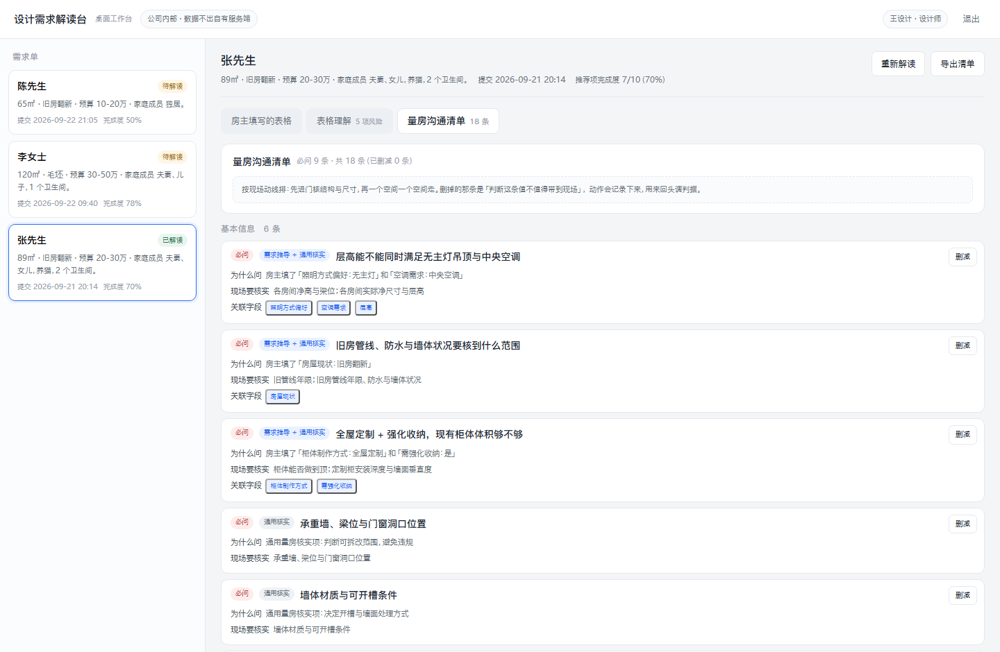
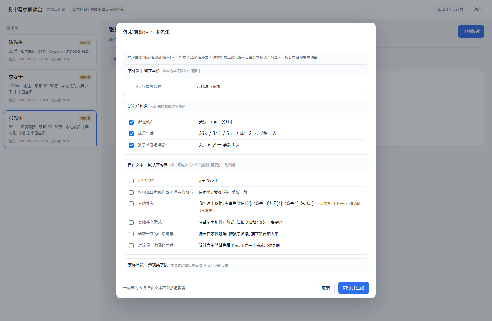
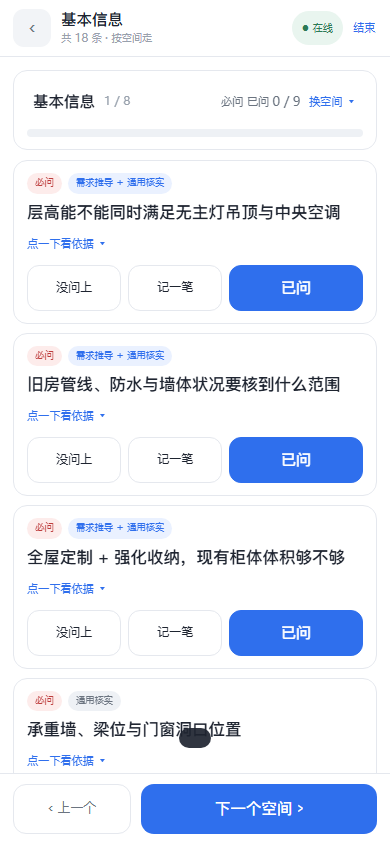

问需
把房主填好的需求单，变成设计师在量房现场可以直接照着问的沟通清单。 从产品设计文档、技术方案，到三个端都能点开跑的完整落地。
线上是演示模式：接口在浏览器里跑同一套领域包（判据、脱敏、合并、排序都是真代码）， 只有存储与模型换成了种子数据，所以不用注册、不用等服务器。登录按钮已经预填演示账号。
01需求单的正确用法，不是照着做方案
采集发生在量房之前。房主填表时手上没有房屋数据——层高、管道位置、承重墙、排水条件都要到现场才能确认。 于是需求单天然带着两类不确定性：
1需求能不能落地，要现场才知道
房主答不准涉及现场条件的问题。照着需求单直接做方案，到了现场才发现做不了，返工。
2需求单装不下房主的全部意图
191 个字段能装下「已经想到的」，装不下「没说出口的」和「自己还没想清楚的」。 方案做出来了，房主说「我不是这个意思」。
所以设计师真正需要的是一份问题清单：还有哪些没定？哪些可能冲突？哪些必须到现场才能确认？ 这三个问题的答案，就是这个产品的核心产出——《量房沟通清单》。
02三个入口，对应现场动线的三段
出门前在电脑上把清单做出来 → 到了现场用手机照着问 → 问完带一份记录回来。三个端共用同一套判据，但界面各自按动线设计。
A问需 · 采集
房主 · 手机上填需求单（可添加到主屏幕）
把需求填成结构化字段。助手用纯规则从已填内容里发现「想要但没说出口」的需求，房主逐条采纳或忽略。
手机上是手机形态：装到主屏幕后像 App 一样打开，断网也能接着填，草稿存在本机。
B问需 · 解读（桌面工作台）
设计师 · 出门前在电脑上
导入需求单 → 外发前逐条确认 → 看表格理解 → 筛量房沟通清单 → 导出。清单按空间分组、必问在前，每条都能点回原始字段。
03界面
左边是桌面端做出来的清单，中间是外发前的确认（脱敏后长什么样、哪些不勾选），右边是现场端逐空间问。



04几个我认为值得说的设计决定
这一节是这份作品集的重点：AI 产品的难点很少是「能不能调通模型」，而是什么交给模型、什么必须交给代码。
1判据决定什么进清单，不是条数
清单很容易退化成「把表格念一遍」。所以进去的条件必须是可判定的： 影响可行性 影响方向 影响成本或工期 —— 前两条是必问，后一条是建议问； 三条都不满足的不进清单，不设条数上限（用条数卡，砍掉的往往是真正重要的问题）。
判据由模型初判，但它必须自洽：一条问题若说「影响可行性」，就必须说得出现场要核实什么—— 「现场条件可能让这个需求落不了地」这句话，说不出核实点就是空话。这一步是代码在兜底，不是靠提示词自觉。
2先做数据最小化，再谈脱敏
生成清单要调模型，意味着房主的家庭与住址信息会离开本机。所以顺序是：能不外发的就不外发， 由规则算出来的（完成度、空缺项、字段矛盾）根本不经过模型。
| 策略 | 字段 | 处理 |
|---|---|---|
| 不外发 | 小区 / 楼盘名称 | 整条留下，不进入任何请求 |
| 泛化后外发 | 所在城市 · 成员年龄 · 计划入住时间 | 城市→城市等级、年龄→年龄段、日期→相对时间段 |
| 原样外发 | 预算区间、风格、宠物等选项类字段 | 本身就是粗粒度选项，不含可识别信息 |
自由文本单独处理：先替换手机号 / 固定电话 / 身份证号 / 邮箱 / 门牌地址 / 微信号，替换后再外发，原文只留在这份需求单里。 中文人名不做自动识别——没有可靠的正则，硬做会把「想装新中式」也当成人名； 这个缺口交给逐条确认界面兜住，所以自由文本默认不勾选，要设计师主动判断。
每次外发都留档：字段清单、脱敏命中位置、当次生效的策略版本、时间、操作人——事后能还原当时的口径。
3模型返回的两道红线：宁可少，不可编
- 结构不合法（少给一块、返回的不是 JSON）→ 判失败
- 出现字段清单之外的
fieldId→ 判失败 - 失败重试一次；仍失败则降级为纯规则清单，并在界面上标明「模型部分未生成」
这样「不编造」就从一句原则变成了可以写进单测的规则：每条清单项要么能指到字段，要么明确标为来自通用量房清单。 降级不是异常路径，是设计好的退路——清单照样出得来，只是少了针对这家的推导项。
4型号是实测定的，不是拍脑袋
三个种子场景各跑一轮，两个型号对比（复测脚本 pnpm run measure:model）：
| 型号 | 耗时 | 降级 | 结论 |
|---|---|---|---|
deepseek-chat | 3.9–18.6s | 18 次调用 1 次 （输出被默认上限截断，已修） | 选非推理型号：结构化抽取更稳，延迟与成本低一个量级 |
deepseek-reasoner | 17.7–70.3s | 8 次调用 2 次 （连接中断 / 输出被代码块包裹） |
提示词与合并逻辑也是实测调出来的，两条结论都写进了技术方案： 核实对象名要和通用清单资产对齐（不对齐时实测一条都并不上，同一件事会各出一条）， 分区归属以资产为准（不随模型给字段的先后顺序漂移）。
5现场端：离线是主场，不是附加功能
量房现场可能没信号，所以离线做了三层：service worker 缓存应用外壳（断网也能打开）、 在线时把清单存进 IndexedDB（现场看得到这一家的清单）、 记录先落本机再重连同步（标「待同步」，回到有网自动推送；同一条记录重复同步按客户端 uuid 去重）。
接口一律不缓存——否则你看到的是过期数据，比看不到更难查。
05还没解决的，和我怎么处理它们
把没解决的说清楚，比假装都解决了更有用。这几条都写进了文档的待确认项。
- 必问档位的口径：产品文档里「影响方向」定义成「答案不同方案方向就不同」，按字面几乎覆盖所有问题； 另一处又要求必问是「不问就会做错、要返工」的那几条。实测同一份需求单连跑四次，必问在 11–16 条之间波动 （分区与合并是稳定的，飘的只有档位）。口径定完，才能把档位从模型手里收回到代码。
- 清单长度与可用率：目标是不设上限、靠组织解决长度，可用率 ≥70% 需要设计师真实删减数据来验证—— 这部分还没测，指标只能先取基线。
- 线上是演示模式：API 服务（Node + Hono）还没部署，两个端当前跑的是浏览器内实现。 接回真服务只需要把两个构建变量指向自己的域名，服务端逻辑与演示版调的是同一份代码。